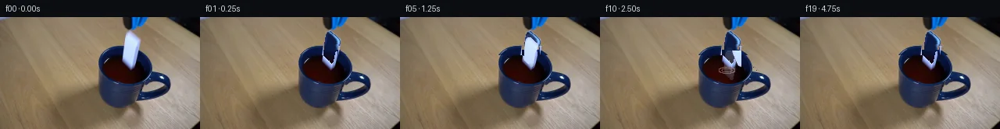

![首帧]()

Round 00
2026-11-06T00:39:36.457131+00:00像素候选变化代码 +430/−0inspection 更新
pixels d194e7c71b19adf4 · code 3da47c62a06df098
查看本轮 generate.py 真实 diff
--- previous/generate.py
+++ current/generate.py
@@ -0,0 +1,430 @@
+#!/usr/bin/env python3
+"""PixelWorld-Text case_0046 generator.
+
+Scene (from prompt.txt): a blue-black grabber drops a white ceramic domino
+into a blue-tinted glass mug of dark liquid standing on wood. Locked-off
+camera, 20 frames at 256x144 / 4 fps.
+
+All pixels are produced with local Python operations only: measured masks,
+mirrored/poly-fit inpainting, analytic splash/ripple drawing, rigid sprite
+translation/rotation with depth darkening. Frame 0 is the untouched input.
+"""
+from pathlib import Path
+import numpy as np
+from PIL import Image, ImageDraw
+from scipy import ndimage
+from artifact_io import save
+
+ROOT = Path(__file__).parent
+rng = np.random.default_rng(46)
+
+# ---------------------------------------------------------------- load
+F0 = np.array(Image.open(ROOT / 'first_frame.png').convert('RGB'))
+H, W = F0.shape[:2]
+R = F0[:, :, 0].astype(int); G = F0[:, :, 1].astype(int); B = F0[:, :, 2].astype(int)
+MX = F0.max(axis=2).astype(int)
+
+# ------------------------------------------------------- geometry tables
+# liquid opening half-widths (measured from dark spans, mirrored about x=160)
+HY = np.array([42, 44, 46, 48, 50, 52, 54, 56, 58, 62, 66, 70, 74,
+ 76, 78, 80, 82, 83, 84, 85, 86])
+HH = np.array([18.0, 24.0, 26.0, 28.0, 29.0, 30.0, 30.5, 31.0, 31.5, 32.0,
+ 32.0, 32.0, 30.5, 29.0, 27.0, 24.0, 20.0, 17.0, 13.0, 8.0, 0.0])
+CX = 160.0
+
+def opening_hw(y):
+ if y < HY[0] or y > HY[-1]:
+ return 0.0
+ return float(np.interp(y, HY, HH))
+
+OPEN = np.zeros((H, W), bool)
+for y in range(HY[0], HY[-1] + 1):
+ h = opening_hw(y)
+ if h > 0:
+ x0 = int(round(CX - h)); x1 = int(round(CX + h))
+ OPEN[y, x0:x1 + 1] = True
+
+# front-glass (liquid seen through glass) polygon for the sinking ghost
+GLASS = np.zeros((H, W), bool)
+GY = np.arange(84, 101)
+GXL = np.r_[np.linspace(134, 140, 5), np.linspace(142, 156, 5),
+ np.linspace(158, 159, 7)].astype(int)[:17]
+GXR = np.r_[np.linspace(182, 176, 5), np.linspace(175, 173, 5),
+ np.linspace(172, 173, 7)].astype(int)[:17]
+for i, y in enumerate(GY):
+ GLASS[y, GXL[i]:GXR[i] + 1] = True
+
+# -------------------------------------------------------------- masks
+# domino: largest bright-bluish-white component
+bright = (R > 190) & (G > 190) & (B > 180)
+lbl, n = ndimage.label(bright)
+DOM = np.zeros_like(bright)
+for i in range(1, n + 1):
+ if (lbl == i).sum() > 100:
+ DOM[lbl == i] = True
+DOM_ERASE = ndimage.binary_dilation(DOM, iterations=1)
+
+# movable jaw pixels (navy finger arms y37..48), with soft AA fringe
+jaw_zone = np.zeros((H, W), bool)
+jaw_zone[37:49, 126:159] = True # left arm
+jaw_zone[37:49, 176:191] = True # right arm
+jaw_alpha = np.zeros((H, W))
+jaw_alpha[jaw_zone & (B > R + 12) & (B > 55) & (R < 140)] = 1.0
+fringe = jaw_zone & (B > R - 12) & (B > 55) & (jaw_alpha == 0)
+jaw_alpha[fringe] = np.clip((B[fringe].astype(float) - R[fringe] + 12) / 26,
+ 0.25, 1.0)
+JAW_ERASE = jaw_alpha > 0.15
+
+ERASE = DOM_ERASE | JAW_ERASE
+
+# ============================================================ clean plate
+plate = F0.copy()
+
+# ---- 1. liquid pool fill via quadratic surface fit on observed pixels ---
+train = OPEN & (~ERASE) & (MX < 95)
+ys, xs = np.where(train)
+d = xs - CX
+Phi = np.stack([np.ones_like(ys, float), ys, ys**2, d, d**2, ys * d], 1)
… diff truncated; 343 more lines …